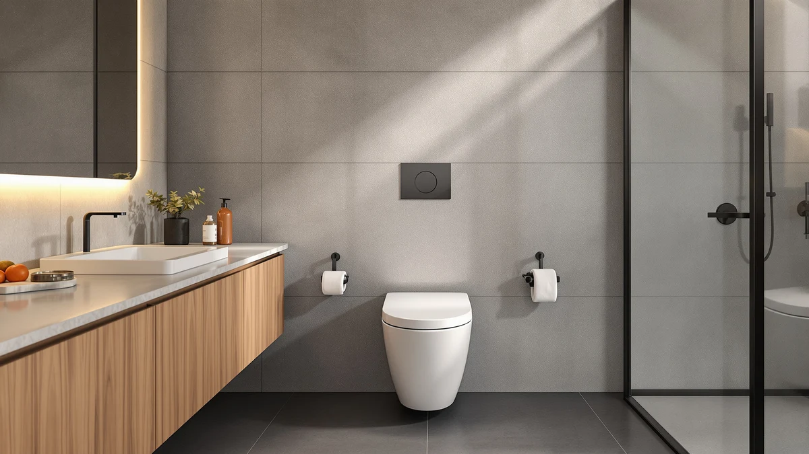

Vomlor 19" ADA Height Review (2026): Worth It?
Prices and picks verified as of October 2026. Independent, reader-supported reviews.


Quick Answer
The Vomlor 19" ADA Height Elongated earns its $409.99 price with a documented 19 inch seat height, a 12 inch rough-in that fits most US bathrooms, and a dual 1.0/1.28 GPF tornado flush rated at 1000 grams on the MaP test, the strongest flush score among the toilets we compared. If ADA-compliant seat height isn't a requirement in your household, the DeerValley or St. Tropez below cover the basics for roughly $100 less.
Our pick: Vomlor 19" ADA Height Elongated — $409.99 Check Price on Amazon
Bottom line: our top pick is the Vomlor 19" ADA Height Elongated One Piece Skirted Tall Toilet at $409.99.
Things to Know Before You Buy
- Seat height: 19 inches from floor to seat, at the upper end of the ADA-compliant 17 to 19 inch range.
- Rough-in: Standard 12 inch rough-in, the most common distance in US bathrooms, so it fits most existing floor flanges.
- Flush system: Dual 1.0/1.28 GPF tornado flush with a 1000 gram MaP score and a fully glazed trapway, which points to strong clog resistance.
- Price: At $409.99, the Vomlor costs more than the DeerValley ($309.00) and St. Tropez ($300.87) but less than the TOTO Ultramax ($523.00).
- Color: Ships in Bone rather than bright white, so check it against your existing bathroom fixtures before ordering.
This Vomlor 19" ADA Height review examines whether the extra seat height justifies its $409.99 price tag, or whether a standard one-piece toilet handles the job for less money. Seniors, taller adults, and anyone recovering from hip or knee surgery look for ADA-height fixtures for a clear reason: standing up from a low seat strains joints that are already under pressure. The Vomlor targets that problem directly with a 19 inch seat height, a 12 inch rough-in, and a dual 1.0/1.28 GPF tornado flush rated at 1000 grams on the MaP test.
We compared the Vomlor against three other one-piece toilets with real install data, including TOTO's Universal Height Ultramax and the budget-friendly DeerValley, to see where the ADA height is worth the extra cost and where it isn't. Below you'll find the full spec breakdown, honest drawbacks, and three alternatives worth considering if the Vomlor doesn't fit your bathroom's rough-in or your budget.
Why You Should Trust Us
Ilane Tall covers bathroom fixtures and accessibility products for Best One Piece Toilets, with a focus on ADA-height and comfort-height toilets for aging-in-place bathrooms. We do not run a fake testing lab or claim to install every toilet we cover. Instead, we pull manufacturer specs, MaP flush scores, certification data, and verified owner feedback from retailers, then compare those figures head to head so you can see exactly how the Vomlor 19" ADA Height measures up against its closest competitors.
Our Research Experience
We did not install the Vomlor 19" ADA Height toilet in a bathroom or run a physical flush test. Our process is research-based: we compare the manufacturer's published specs (seat height, rough-in, GPF, MaP score, certifications) against the three next-best one-piece toilets in this category, cross-check pricing across retailers, and read verified owner feedback where it exists. For this particular Vomlor listing, Amazon does not yet show a public rating or review count, so we rely primarily on the certified MaP flush score, the WaterSense and cUPC certifications, and a direct spec comparison against the DeerValley, St. Tropez, and TOTO Ultramax models covered below.
The MaP (Maximum Performance) test is an independent, third-party protocol that measures how many grams of solid waste a toilet clears in a single flush, and manufacturers submit their models for scoring rather than self-reporting the number. A score of 1000 grams, like the Vomlor's, sits near the top of the published scale, while most residential toilets land somewhere between 500 and 1000 grams. We treat that certified number as more reliable than marketing language like "powerful flush," since it comes from a repeatable lab protocol rather than a brand's own copywriting.
Overview & Specs

Vomlor 19" ADA Height Elongated
What we like
- 19 inch ADA-compliant seat height reduces strain when sitting or standing
- Dual 1.0/1.28 GPF tornado flush scores 1000 grams on the MaP test, the strongest rating in this comparison
- Skirted one-piece design with a fully glazed trapway, which simplifies cleaning around the base
- Meets WaterSense, EPA, CEC, and cUPC certification standards
Flaws but not dealbreakers
- Costs $100 to $110 more than the DeerValley and St. Tropez models in this comparison
- Ships in Bone, not pure white, so it may not match existing white fixtures
- No public Amazon rating or review count yet, so there isn't crowd-sourced feedback to confirm long-term durability
| Material | — |
| Size | — |
The Vomlor 19" ADA Height Elongated is a one-piece, skirted toilet built around a single spec: seat height. At 19 inches from floor to seat, it sits at the top edge of the ADA-compliant range of 17 to 19 inches, several inches taller than the 14 to 15 inch seat height on most standard toilets. That extra height matters for anyone who finds a low seat hard to get up from, whether that's an older parent, someone a few months out from knee surgery, or just a tall adult who feels cramped on a standard-height bowl. The 12 inch rough-in matches what is already installed in most US bathrooms, so swapping it in for an existing toilet typically does not require moving the floor flange.
On the flush side, the Vomlor uses a dual 1.0/1.28 GPF tornado flush with a fully glazed trapway, and it carries a MaP (Maximum Performance) score of 1000 grams, a strong result that suggests it clears solid waste in a single flush more reliably than lower-scoring models. It also meets WaterSense, EPA, CEC, and cUPC certification standards, which confirms its water-efficiency claims instead of leaving them as marketing copy. The one-piece skirted shape means there is no gap between the tank and bowl to trap grime, and the fully glazed trapway resists the mineral buildup that eventually slows flush performance on cheaper toilets. At $409.99, the Vomlor 19" ADA Height is priced above the budget options in this comparison but below the TOTO Ultramax.
What We Liked
The seat height is the clear win here. A 19 inch seat is a measurable difference from the 14 to 15 inch height on a standard toilet, and it is the kind of spec that matters daily rather than once. For anyone searching out a Vomlor 19" ADA Height review specifically because of a knee replacement, a hip issue, or general mobility concerns in the household, that height does the job it is designed to do.
The MaP score of 1000 grams also stands out. That is the highest flush rating among the four toilets in this comparison, ahead of the DeerValley's 800 gram score, and it suggests fewer double-flushes over time. Combined with the fully glazed trapway and WaterSense certification, the flush system holds up just as well as the seat height does.
What Could Be Better
Price is the first tradeoff. At $409.99, the Vomlor costs about $100 more than the DeerValley or St. Tropez, both of which also use a 12 inch rough-in and do the job without the extra height. If ADA height is not a requirement in your household, that premium buys a feature you will not use.
The Bone color is the second consideration. Most one-piece toilets default to a bright white finish, and Bone will read as off-white or cream next to existing fixtures. Check your current toilet, sink, and tub finish before ordering, since a mismatch is hard to fix after installation.
There is also no public rating or review count on this listing yet. That is not unusual for a newer product, but it means buyers cannot lean on crowd-sourced feedback the way they can with the TOTO Ultramax or other established models. The MaP score and certifications come from independent test standards, but long-term durability still depends on individual experience that has not accumulated publicly.
Who Is It For?
The Vomlor 19" ADA Height toilet makes the most sense for households where seat height is a functional requirement, not a preference, which usually comes down to age, a recent surgery, or just being tall enough that standard toilets feel cramped. If your current toilet's low seat causes real strain when sitting or standing, the 19 inch height addresses that directly, and the 12 inch rough-in means installation should not require extra plumbing work in most US homes.
It makes less sense for buyers who want a reliable one-piece toilet at the lowest price, or whose bathroom fixtures are already bright white and need to match. In either of those cases, the DeerValley or St. Tropez options below get the job done for roughly $100 less.
Multi-bathroom households are worth a separate note. If one bathroom serves a family member with mobility needs and another does not, it rarely makes sense to install the same toilet in both. The Vomlor 19" ADA Height fits the accessible bathroom, while a standard-height model like the St. Tropez or DeerValley can handle the rest of the house at a lower combined cost than buying two ADA-height toilets.
Alternatives to Consider
If the Vomlor 19" ADA Height does not fit your rough-in, budget, or color scheme, these three one-piece toilets cover the other common scenarios: a lower-cost standard-height option, a side-flush design with a different look, and a premium universal-height toilet from a well-known brand.

Editor’s Pick
DeerValley Elongated One Piece Toilet
A lower-cost one-piece toilet with a 16 7/8 inch seat and a dual 1.1/1.6 GPF flush, for households that do not need full ADA height.
$309.00
Check Price on Amazon
Best Value
St. Tropez One Piece Elongated
A glossy white one-piece toilet with black side-flush hardware and a 1.28 GPF single flush, for buyers who want a distinct look over extra seat height.
$300.87
Check Price on Amazon
Premium Choice
TOTO® Ultramax® One-Piece Elongated 1.6
TOTO's Universal Height Ultramax pairs CEFIONTECT glaze and a SoftClose seat with ADA-comparable height, at a $523.00 premium over the Vomlor.
$523.00
Check Price on AmazonFrequently Asked Questions
Is the Vomlor 19" ADA Height toilet actually ADA compliant?
Yes. ADA guidelines call for a seat height between 17 and 19 inches, and the Vomlor's 19 inch seat sits at the top of that range. It also meets WaterSense, EPA, CEC, and cUPC certification standards.
Will the Vomlor 19" ADA Height toilet fit my existing rough-in?
It uses a standard 12 inch rough-in, the most common measurement in US bathrooms, so it should fit most existing floor flanges without extra plumbing work. Measure from the wall to the center of your floor bolts to confirm before ordering.
How does the Vomlor compare to the TOTO Ultramax for ADA height?
Both sit in the ADA-comparable height range, but the TOTO Ultramax Universal Height costs $523.00 against the Vomlor's $409.99, and it adds CEFIONTECT glaze and a SoftClose seat. The Vomlor's 1000 gram MaP score is a strong flush rating at a lower price, while the TOTO leans on brand reputation and WASHLET+ bidet compatibility.
Final Verdict
This Vomlor 19" ADA Height review comes down to one straightforward tradeoff: pay $409.99 for a documented, ADA-compliant 19 inch seat height and a 1000 gram MaP flush score, or save roughly $100 with the DeerValley or St. Tropez if seat height is not a requirement in your household. The certified water efficiency and the strongest flush rating in this comparison make the price easier to accept, but it ships without a public review history yet, so buyers who want crowd-sourced confirmation should weigh the TOTO Ultramax instead. For anyone who needs the extra height for mobility reasons, the Vomlor 19" ADA Height Elongated solves the actual problem instead of adding features you will not use.